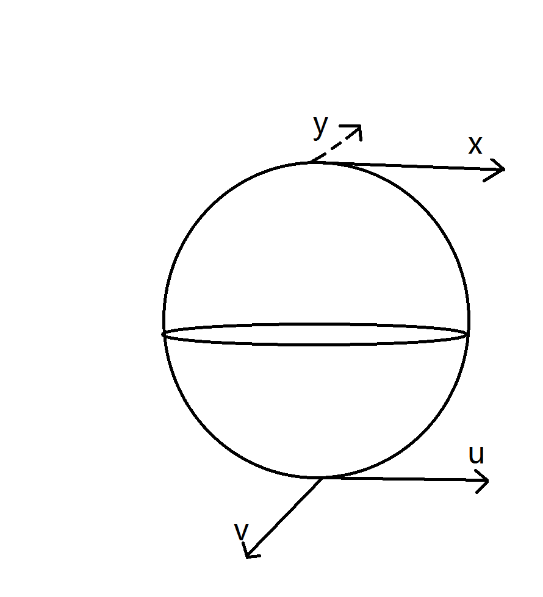

Sheaves & Bundles
Sheaves and bundles¶
Example: Constant sheaf, not quasi-coherent; skyscraper sheaf, not quasi-coherent¶
Let \(k\) be a field and write \(\mathbb{A}^1_k = \operatorname{Spec}(k[T])\). We exhibit several sheaves that fail quasi-coherence and clarify the underlying mechanism.
(1) A quasi-coherent skyscraper. The skyscraper sheaf supported at the origin with stalk \(k\) is isomorphic to \(\widetilde{M}\) for \(M = k[T]/(T)\), hence quasi-coherent by construction. This is the sheaf associated to the closed subscheme \(V(T)\).
(2) A non-quasi-coherent skyscraper. Let \(\mathscr{F}\) be the skyscraper sheaf on \(\mathbb{A}^1_k\) with stalk \(k(T)\) at the origin and stalk \(0\) elsewhere. Suppose \(\mathscr{F} \cong \widetilde{M}\) for some \(k[T]\)-module \(M\). Then \(M = \Gamma(\mathbb{A}^1_k, \mathscr{F})\). Since \(\mathbb{A}^1_k\) is the only open set in the Zariski topology containing the generic point and the origin simultaneously, and \(\mathscr{F}\) is a skyscraper, one finds \(M = k(T)\). But \(k(T)\) is a divisible \(k[T]\)-module: for any nonzero \(f \in k[T]\), the localization \(k(T)_f = k(T)\). Therefore \(\widetilde{k(T)}\) has stalk \(k(T)\) at every point of \(\mathbb{A}^1_k\), including the generic point \((0)\). The skyscraper sheaf \(\mathscr{F}\), however, has stalk \(0\) at the generic point. This contradiction shows \(\mathscr{F}\) is not quasi-coherent.
(3) The constant sheaf on \(\mathbb{P}^1_k\). Cover \(\mathbb{P}^1_k\) by \(U_0 = \operatorname{Spec}(k[t])\) and \(U_1 = \operatorname{Spec}(k[t^{-1}])\), with \(U_0 \cap U_1 = \operatorname{Spec}(k[t, t^{-1}])\). The constant sheaf \(\underline{k}\) assigns \(k\) to every connected open, so \(\underline{k}(U_0) = \underline{k}(U_1) = \underline{k}(U_0 \cap U_1) = k\) (each being irreducible, hence connected). If \(\underline{k}|_{U_0}\) were quasi-coherent, it would equal \(\widetilde{M}\) for some \(k[t]\)-module \(M\) with \(M = \underline{k}(U_0) = k\). The localization axiom then forces
contradicting \(\underline{k}(U_0 \cap U_1) = k\). So \(\underline{k}\) is not quasi-coherent on \(\mathbb{P}^1_k\).
(4) More generally, the constant sheaf \(\underline{k}\) on any scheme \(X\) is almost never quasi-coherent: quasi-coherence requires sections to transform by localization, while the constant sheaf depends only on the connectedness of opens.
(5) Flasqueness on irreducible spaces. On an irreducible topological space \(X\), every nonempty open \(U\) is dense and connected, so \(\underline{k}(U) = k\) with all restriction maps equal to \(\operatorname{id}_k\). For any inclusion \(V \subseteq U\) of nonempty opens, the restriction \(\underline{k}(U) \to \underline{k}(V)\) is surjective, which is the definition of a flasque sheaf. Flasque sheaves are acyclic for the Cech functor, giving \(\check{H}^i(\mathfrak{U}, \underline{k}) = 0\) for all \(i \geq 1\) and any open cover \(\mathfrak{U}\).
The underlying point is that quasi-coherence is an algebraic condition: sections over open subsets must be determined by localization of a single module. Constant sheaves, whose sections depend only on connectivity, satisfy this compatibility only in degenerate situations.
Remark: Sheaf cohomology, Zariski topology, etale topology¶
The choice of Grothendieck topology on a scheme fundamentally affects sheaf cohomology, even for simple sheaves on simple spaces.
Grothendieck vanishing. For a Noetherian topological space \(X\) of dimension \(n\) and any sheaf of abelian groups \(\mathscr{F}\) on \(X\) (in the Zariski topology), we have \(H^i(X, \mathscr{F}) = 0\) for all \(i > n\). This dimensional bound applies in the Zariski topology but not in the etale topology. For a concrete comparison:
The Zariski vanishing is immediate from \(\dim(\mathbb{P}^1) = 1\) and Grothendieck's theorem. The nonvanishing in the etale topology reflects the richer structure of the etale site: etale covers can detect topological features (such as the fundamental group and higher homotopy) that are invisible to Zariski opens.
Cech-to-derived spectral sequence. For the standard affine cover \(\mathfrak{U} = \{U_0, U_1\}\) of \(\mathbb{P}^1\), the Cech complex for \(\underline{k}\) involves sections over \(U_0\), \(U_1\), and \(U_0 \cap U_1\). The cover need not be acyclic for \(\underline{k}\) in either topology. However, the Cech-to-derived-functor spectral sequence
(where \(\mathscr{H}^q(\mathscr{F})\) denotes the presheaf \(U \mapsto H^q(U, \mathscr{F})\)) provides a systematic passage from Cech data to derived functor cohomology.
Example: Locally free module vs. locally free sheaf; why we need the Noetherian condition¶
The notions of "locally free module" (all localizations at primes are free) and "locally free sheaf" (trivial on a Zariski open cover) do not coincide without finiteness hypotheses. The relationship involves three results at different levels of generality.
Sheaf-level characterization. For any ring \(R\) and \(R\)-module \(M\), the associated sheaf \(\widetilde{M}\) on \(\operatorname{Spec}(R)\) is locally free as a sheaf of \(\mathcal{O}\)-modules if and only if \(M\) is projective. The forward direction uses the fact that a locally free sheaf on an affine scheme is a direct summand of a free sheaf, hence the module is projective. The converse uses Kaplansky's theorem that projective modules over local rings are free, so \(\widetilde{M}_\mathfrak{p} \cong \widetilde{M_\mathfrak{p}}\) is free for each prime \(\mathfrak{p}\); one then constructs a trivializing open cover from distinguished opens \(D(f_i)\) on which \(M_{f_i}\) is free.
The Noetherian case. Over a Noetherian ring \(R\), a finitely generated module \(M\) is projective if and only if \(M_\mathfrak{p}\) is free over \(R_\mathfrak{p}\) for every prime \(\mathfrak{p}\). This is Serre's criterion: finite generation ensures the rank function \(\mathfrak{p} \mapsto \operatorname{rank}_{R_\mathfrak{p}}(M_\mathfrak{p})\) is locally constant on \(\operatorname{Spec}(R)\), and Nakayama's lemma allows local bases to be lifted to bases on distinguished opens.
Failure without Noetherian hypothesis. Without finite generation or Noetherian hypotheses, stalk-wise freeness does not imply projectivity. The module \(\mathbb{Q}\) over \(\mathbb{Z}\) provides a clean example (see ecag-0170): every localization \(\mathbb{Q} \otimes_\mathbb{Z} \mathbb{Z}_\mathfrak{p}\) is free, yet \(\mathbb{Q}\) is not projective. The obstruction is that no finite collection of distinguished opens \(D(f_i)\) simultaneously trivializes \(\widetilde{\mathbb{Q}}\).
Remark: Coherent sheaf \(\Leftrightarrow\) finitely generated module, Hartshorne \(\mathrm{II}.5.5\)¶
A sheaf of \(\mathcal{O}_X\)-modules \(\mathscr{F}\) on a scheme \(X\) is coherent if it is of finite type and, for every open \(U \subseteq X\) and every morphism \(\mathcal{O}_U^n \to \mathscr{F}|_U\), the kernel is of finite type. On an affine Noetherian scheme \(\operatorname{Spec}(R)\), this condition matches finite generation exactly: coherent sheaves correspond bijectively to finitely generated \(R\)-modules via \(M \mapsto \widetilde{M}\) (Hartshorne II.5.5).
The Noetherian hypothesis enters through the kernel condition. Over a Noetherian ring, every submodule of a finitely generated module is finitely generated, so the kernel of any surjection \(R^n \twoheadrightarrow M\) is automatically finitely generated. Without Noetherianity, a finitely generated module can fail to be coherent because its relations need not form a finitely generated submodule. For non-Noetherian rings, the appropriate substitute is the notion of finitely presented modules -- those admitting an exact sequence \(R^m \to R^n \to M \to 0\) with both \(m\) and \(n\) finite. Finitely presented modules always give coherent sheaves, regardless of whether \(R\) is Noetherian.
Example: A finitely generated flat module that is not finitely presented¶
Let \(R = \prod_{i=1}^{\infty} \mathbb{F}_2\), the countably infinite product of copies of \(\mathbb{F}_2\), and let \(I = \bigoplus_{i=1}^{\infty} \mathbb{F}_2 \subset R\) be the ideal of sequences with finite support. We show that \(M = R/I\) is finitely generated and flat, but not finitely presented.
Von Neumann regularity. The ring \(R\) is von Neumann regular: for any element \(a = (a_i)\) with \(a_i \in \mathbb{F}_2\), set \(b = a\). Then \(a^2 b = a^3 = a\) since \(a_i^3 = a_i\) in \(\mathbb{F}_2\). Over a von Neumann regular ring, every finitely generated ideal is a direct summand (generated by an idempotent), so every \(R\)-module is flat. This can also be seen through Lazard's criterion: flatness is equivalent to the vanishing of \(\operatorname{Tor}_1^R(R/J, M)\) for all finitely generated ideals \(J\), and when \(J\) is a direct summand, the Tor vanishes automatically.
Non-Noetherianity. The ideal \(I\) is not finitely generated: any finite collection of elements in \(I\) is supported on finitely many coordinates, so the ideal they generate misses all but finitely many standard basis vectors. Since \(I\) contains all standard basis vectors \(e_i\), no finite set generates \(I\).
Finite generation without finite presentation. The module \(M = R/I\) is cyclic (generated by the image of \(1\)), hence finitely generated. It is flat because every \(R\)-module is flat over a von Neumann regular ring. However, \(M\) is not finitely presented: the kernel of the surjection \(R \twoheadrightarrow R/I\) is \(I\), which is not finitely generated. A finitely presented module would require this kernel to be finitely generated.
This example also illustrates why, over non-Noetherian rings, the category of finitely generated modules and the category of finitely presented modules can differ substantially. The module \(R/I\) lies in the former but not the latter.
Example: Locally free module but not projective¶
We exhibit a module that is free at every localization yet fails to be projective, demonstrating the necessity of finiteness conditions in globalizing local freeness.
The example. Take \(R = \mathbb{Z}\) and \(M = \mathbb{Q}\). For each prime ideal \(\mathfrak{p}\) of \(\mathbb{Z}\):
- If \(\mathfrak{p} = (p)\) for a prime \(p\): \(M_{(p)} = \mathbb{Q} \otimes_\mathbb{Z} \mathbb{Z}_{(p)} = \mathbb{Q}\), which is a free module of rank \(1\) over the local ring \(\mathbb{Z}_{(p)}\) (since \(\mathbb{Q}\) is the fraction field of \(\mathbb{Z}_{(p)}\), and \(\mathbb{Z}_{(p)} \hookrightarrow \mathbb{Q}\) becomes an isomorphism after localizing at \((p)\), giving \(M_{(p)} \cong \mathbb{Q} = \operatorname{Frac}(\mathbb{Z}_{(p)})\)). More directly: \(\mathbb{Q}\) is already a \(\mathbb{Z}_{(p)}\)-module and \(\mathbb{Q} = \mathbb{Z}_{(p)} \cdot 1\) since every element of \(\mathbb{Q}\) can be written as \(a/b\) with \(\gcd(b,p) = 1\) (clear denominators at primes \(\neq p\), then the remaining denominator is a unit in \(\mathbb{Z}_{(p)}\))... actually this is incorrect; \(\mathbb{Q}\) is not finitely generated over \(\mathbb{Z}_{(p)}\). The correct computation: \(M_{(p)} = \mathbb{Q} \otimes_\mathbb{Z} \mathbb{Z}_{(p)} = \mathbb{Q}\), and \(\mathbb{Q}\) is a free \(\mathbb{Q}\)-module of rank 1, but as a \(\mathbb{Z}_{(p)}\)-module it is the fraction field, not free. Let us reconsider.
The correct approach: localize \(M = \mathbb{Q}\) at each prime \(\mathfrak{p} = (p)\). The stalk is \(M_\mathfrak{p} = \mathbb{Q}\). The local ring is \(R_\mathfrak{p} = \mathbb{Z}_{(p)}\). Now \(\mathbb{Q} \cong \operatorname{colim}_n \mathbb{Z}_{(p)} \cdot p^{-n}\) is the fraction field of \(\mathbb{Z}_{(p)}\), which is not a free \(\mathbb{Z}_{(p)}\)-module.
Corrected example. Let \(R = \prod_{i=1}^{\infty} \mathbb{Z}\) and \(M = \bigoplus_{i=1}^{\infty} \mathbb{Z}\), viewed as an \(R\)-module via the componentwise action (the \(j\)-th factor of \(R\) acts on the \(j\)-th summand of \(M\), with \(M\) embedded in \(R\) as the direct sum inside the direct product).
For any prime ideal \(\mathfrak{p}\) of \(R\), the localization \(M_\mathfrak{p}\) is a free \(R_\mathfrak{p}\)-module. To see this, note that each prime \(\mathfrak{p}\) of \(R\) contains all but at most one of the idempotents \(e_i = (0, \ldots, 0, 1, 0, \ldots)\). If \(e_j \notin \mathfrak{p}\) for some \(j\), then \(R_\mathfrak{p} \cong \mathbb{Z}_\mathfrak{q}\) for some prime \(\mathfrak{q}\) of \(\mathbb{Z}\), and \(M_\mathfrak{p} \cong \mathbb{Z}_\mathfrak{q}\), free of rank 1. If all \(e_i \in \mathfrak{p}\), the analysis is more delicate but \(M_\mathfrak{p}\) is still free.
However, \(M\) is not projective as an \(R\)-module. If \(M\) were projective, it would be a direct summand of a free \(R\)-module. But Chase proved that a direct sum \(\bigoplus_{i=1}^\infty \mathbb{Z}\), viewed as a module over \(\prod_{i=1}^\infty \mathbb{Z}\), is not projective -- the key obstruction being that the "support" of elements in \(M\) is always finite, while projective modules over \(R\) must accommodate the infinitary structure of \(R\).
This example demonstrates that stalk-wise freeness does not globalize to projectivity without finite generation or Noetherian hypotheses: there is no uniform Zariski open cover of \(\operatorname{Spec}(R)\) on which \(\widetilde{M}\) trivializes.
Example: A (smooth) vector bundle but not a (holomorphic, algebraic) vector bundle¶
Consider the projection from \(\mathbb{P}^1 \times \mathbb{P}^1\) minus the diagonal,
over \(\mathbb{C}\). We show that \(\pi\) is topologically the line bundle \(\mathcal{O}_{\mathbb{P}^1}(-2)\) but admits no algebraic or holomorphic section.
\(X\) is affine. The Segre embedding maps
With coordinates \([X : Y : Z : W]\) on \(\mathbb{P}^3\), the Segre quadric is \(\{XW = YZ\}\) and the diagonal \(\Delta\) maps to the locus \(\{Y = Z\}\) within this quadric. Therefore \(X = (\mathbb{P}^1 \times \mathbb{P}^1) \setminus \Delta\) embeds as a closed subvariety of the affine complement \(\mathbb{P}^3 \setminus V(Y - Z)\), and is thus affine.
No algebraic section exists. If \(\pi\) admitted an algebraic section \(\sigma : \mathbb{P}^1 \to X\), then the composition \(\mathbb{P}^1 \xrightarrow{\sigma} X \hookrightarrow \mathbb{A}^N\) would be a non-constant morphism from a proper variety to affine space. By properness, the image is a closed point, so the morphism is constant -- contradicting \(\pi \circ \sigma = \operatorname{id}_{\mathbb{P}^1}\).
Topological trivialization and the antipodal section. Identifying \(\mathbb{P}^1(\mathbb{C}) \cong S^2\), the map \(\sigma(x) = (x, -x)\) (antipodal point) gives a continuous section of \(\pi\) that is neither holomorphic nor algebraic.

Degree computation via self-intersection. To identify the topological type of the line bundle, we compute the self-intersection number of the zero section \(\sigma\).
Perturb \(\sigma\) by rotating the second factor through angle \(t\) about the polar axis:
where \(\rho_t\) is rotation by \(t\). The sections \(\sigma\) and \(\sigma_t\) intersect at exactly two points: \(p = (N, S)\) and \(q = (S, N)\) (north and south poles).
Near \(p = (N, S)\), use stereographic coordinates \((x', y')\) on the first \(S^2\) near \(N\) and \((u, v)\) on the second near \(S\). The two sections are
The intersection index at \(p\) is the sign of
For small \(t > 0\), this determinant is negative, giving intersection index \(-1\) at \(p\). The same computation at \(q = (S, N)\) also yields \(-1\).
The total self-intersection is \((-1) + (-1) = -2\), which equals the degree of the line bundle. Therefore \(\pi : X \to \mathbb{P}^1\) is topologically \(\mathcal{O}_{\mathbb{P}^1}(-2)\).
The complement of the diagonal in \(\mathbb{P}^1 \times \mathbb{P}^1\) is thus algebraically affine (so no projective variety maps non-trivially into it) yet topologically a nontrivial line bundle over \(S^2\). The antipodal map provides a continuous section that no algebraic or holomorphic map can replicate.
Remark¶
The local-coordinate formula \(\sigma(x', y') = (x', y', -x', y')\) near the point \((N, S)\) deserves unpacking. Here \((x', y')\) are stereographic coordinates on the source \(S^2\) near the north pole \(N\), and \((x, y, u, v)\) are coordinates on \(S^2 \times S^2\) near \((N, S)\), with \((x, y)\) for the first factor near \(N\) and \((u, v)\) for the second factor near \(S\). The section reads
The sign in \(u = -x'\) and the absence of sign change in \(v = y'\) encode how the antipodal map acts in these specific stereographic charts. An alternative computation uses de Rham cohomology: the Euler class of the bundle \(\pi : X \to S^2\) can be evaluated by integrating the pullback of the Thom class over \(S^2\), yielding \(-2\) without recourse to local coordinates.
Remark: index, degree¶
Several related notions of "index" and "degree" appear across differential topology and algebraic geometry. We collect them for comparison.
Fixed-point index. For \(f : X \to X\) a smooth self-map and \(p \in \operatorname{Fix}(f)\) an isolated fixed point,
where \(Df_p : T_p X \to T_p X\) is the differential.
Lefschetz number. For \(f : X \to X\) on a compact manifold,
The Lefschetz fixed-point theorem asserts \(\Lambda(f) = \sum_{p \in \operatorname{Fix}(f)} i(p)\) when the fixed points are isolated and nondegenerate.
Index of a vector field. For a vector field \(v\) on a compact manifold \(X\) with isolated zeros, the Poincare--Hopf theorem gives \(\sum_{v(p)=0} \operatorname{ind}_p(v) = \chi(X)\).
Intersection index. For smooth maps \(f : X \to Y\) and \(g : Z \to Y\) with \(\dim X + \dim Z = \dim Y\), the intersection index at a transverse point is the sign of the determinant of the combined differential.
Degree of a smooth map. For \(f : X \to Y\) between compact oriented manifolds of the same dimension, \(\deg(f) = \sum_{p \in f^{-1}(y)} \operatorname{sign}(\det Df_p)\) for a regular value \(y\). In algebraic geometry, the degree of a dominant morphism \(f : X \to Y\) of varieties is the field extension degree \([k(X) : k(Y)]\).
Degree of the top Chern class. For a rank-\(r\) vector bundle \(\mathscr{E}\) on a compact complex manifold \(X\) of dimension \(r\), \(\deg(c_r(\mathscr{E})) = \int_X c_r(\mathscr{E})\) counts (with multiplicity) the zeros of a generic section.
Intersection numbers. In differential topology, the intersection number is a signed count of transverse intersection points. In algebraic geometry, the intersection multiplicity at a point is computed via Serre's Tor formula or as \(\chi(\mathcal{O}_Z)\).
The unifying perspective is that the degree of a smooth map \(f : X \to Y\) equals the intersection index of \([X \times \{y\}]\) and \([\Gamma_f]\) in \(X \times Y\). In particular, for \(f : X \to X\), the Lefschetz number \(\Lambda(f)\) equals the intersection number \([\Delta] \cdot [\Gamma_f]\) in \(X \times X\).
Example: A reflexive sheaf but not locally free¶
On a normal variety of dimension \(\geq 2\), reflexive rank-1 sheaves correspond to Weil divisor classes, while locally free rank-1 sheaves correspond to Cartier divisor classes. The gap between \(\operatorname{Cl}(X)\) and \(\operatorname{Pic}(X)\) produces reflexive sheaves that are not locally free.
The quadric cone. Let \(k\) be a field with \(\operatorname{char}(k) \neq 2\), \(R = k[x,y,z]/(xy - z^2)\), and \(X = \operatorname{Spec}(R)\). The singular locus is the vertex \(\mathfrak{m} = (x,y,z)\). Consider the ideal sheaf \(\mathscr{I} = \widetilde{\mathfrak{m}}\).
Reflexivity. The ring \(R\) is a normal domain (it is the invariant ring of \(k[u,v]\) under \(u \mapsto -u, v \mapsto -v\), with \(x = u^2, y = v^2, z = uv\)). Since \(X\) is normal and \(\mathfrak{m}\) is a rank-1 torsion-free \(R\)-module, the double dual \(\mathfrak{m}^{\vee\vee}\) is a rank-1 reflexive module. One verifies \(\mathfrak{m}^{\vee\vee} \cong \mathfrak{m}\) by computing \(\operatorname{Hom}_R(\mathfrak{m}, R)\): the dual \(\mathfrak{m}^\vee\) is generated over \(R\) by the two maps \(\varphi_1 : \mathfrak{m} \to R\) with \(\varphi_1(x) = z, \varphi_1(z) = y, \varphi_1(y) = yz/x\) (using the relation \(xy = z^2\)) and its companion, and applying \(\operatorname{Hom}\) again returns \(\mathfrak{m}\). So \(\mathscr{I}\) is reflexive.
Non-local-freeness. If \(\mathscr{I}\) were locally free at the vertex, then \(\mathfrak{m} R_\mathfrak{m}\) would be a free \(R_\mathfrak{m}\)-module of rank 1, hence principal. But \(R_\mathfrak{m}\) is a 2-dimensional local ring, and a local ring whose maximal ideal is principal has dimension \(\leq 1\) (it would be a DVR or a field). Since \(\dim R_\mathfrak{m} = 2\), \(\mathfrak{m}\) is not principal, and \(\mathscr{I}\) is not locally free.
Via the class group. The class group \(\operatorname{Cl}(X)\) is computed as follows. The smooth locus \(X^{\mathrm{sm}} = X \setminus \{\mathfrak{m}\}\) has a ruling by lines (the two families of rulings on the quadric surface). The Weil divisor \(D\) corresponding to one ruling generates \(\operatorname{Cl}(X) \cong \mathbb{Z}/2\mathbb{Z}\): the divisor \(2D\) is Cartier (it is cut out by a hyperplane), but \(D\) itself is not. The ideal \(\mathfrak{m}\) corresponds to this generator. Since the class of \(\mathfrak{m}\) in \(\operatorname{Cl}(X)\) is the nontrivial element of \(\mathbb{Z}/2\mathbb{Z}\), it defines a Weil divisor that is not Cartier, confirming that \(\widetilde{\mathfrak{m}}\) is reflexive but not locally free.
Example: A coherent sheaf but not a quotient of a locally free sheaf¶
Let \(n \geq 2\) and let \(X\) be the affine \(n\)-space with doubled origin, obtained by gluing two copies \(U_0, U_1 \cong \mathbb{A}^n_k\) along the common open \(U_0 \cap U_1 = \mathbb{A}^n_k \setminus \{0\}\). We show that \(X\) carries a coherent sheaf that is not a quotient of any locally free sheaf.
Every locally free sheaf on \(X\) is trivial. By the Quillen--Suslin theorem, every finitely generated projective module over \(k[x_1, \ldots, x_n]\) is free, so every locally free sheaf on \(\mathbb{A}^n_k\) is trivial. A locally free sheaf \(\mathscr{E}\) on \(X\) is determined by trivializations \(\mathscr{E}|_{U_0}\) and \(\mathscr{E}|_{U_1}\) together with a gluing automorphism \(\varphi\) over \(U_0 \cap U_1 = \mathbb{A}^n_k \setminus \{0\}\). Since \(n \geq 2\), the complement of the origin has codimension \(\geq 2\), so Hartogs' extension gives
Therefore \(\varphi\) extends to an automorphism over all of \(\mathbb{A}^n_k\), forcing \(\mathscr{E}\) to be trivial.
The resolution property fails. If every coherent sheaf on \(X\) were a quotient of a locally free sheaf, then (since all locally free sheaves are trivial, hence isomorphic to \(\mathcal{O}_X^{\oplus r}\)) every coherent sheaf would be globally generated. By Serre's affineness criterion, this would force \(X\) to be affine. But \(X\) is not separated (the two origins cannot be separated by global functions), hence not affine -- a contradiction.
An explicit non-globally-generated sheaf. Let \(p \in U_0\) and \(q \in U_1\) denote the two origins. The ideal sheaf \(\mathscr{I}\) of the point \(p\) has
with gluing \(x_i = y_i\) on \(U_0 \cap U_1\). The stalk \(\mathscr{I}_q = \mathcal{O}_{X,q}\) contains \(1\), so \(\mathscr{I}\) should be generated at \(q\). However, by Hartogs' extension any global section of \(\mathscr{I}\) is a pair \((f, g)\) with \(f \in (x_1, \ldots, x_n)\) and \(g \in k[y_1, \ldots, y_n]\) that agree on the overlap. Since \(f\) vanishes at the origin, \(g\) also vanishes at the origin. Thus every global section of \(\mathscr{I}\) vanishes at \(q\), and \(\mathscr{I}\) is not globally generated.
Remark¶
For well-behaved schemes, the resolution property always holds. On a quasi-projective variety \(X\) over a Noetherian ring, every coherent sheaf is a quotient of a locally free sheaf. The argument uses the ample line bundle \(\mathcal{O}_X(1)\): for any coherent \(\mathscr{F}\), the twist \(\mathscr{F}(n)\) is globally generated for \(n \gg 0\), giving a surjection \(\mathcal{O}_X^{\oplus r} \twoheadrightarrow \mathscr{F}(n)\), hence \(\mathcal{O}_X(-n)^{\oplus r} \twoheadrightarrow \mathscr{F}\).
More generally, the resolution property holds for Noetherian regular schemes (by a result of Kleiman) and smooth schemes over a field, but can fail for non-separated or non-quasi-projective schemes, as the doubled-origin example (ecag-0175) demonstrates.
Example: A universally closed morphism but not a closed embedding¶
We exhibit two finite (hence universally closed) morphisms that fail to be closed embeddings, illustrating the distinct roles of topological properness and sheaf-level injectivity.
Degree-\(n\) map on \(\mathbb{P}^1\). The morphism \(f : \mathbb{P}^1_k \to \mathbb{P}^1_k\) given by \([x : y] \mapsto [x^n : y^n]\) for \(n \geq 2\) is finite of degree \(n\) between proper schemes, hence proper. It is not a closed embedding because it is not injective on geometric points: the fiber over any point other than \([0:1]\) and \([1:0]\) consists of \(n\) distinct points (the \(n\)-th roots). Equivalently, \(f\) is not a monomorphism.
Normalization of the cusp. The ring inclusion \(k[t^2, t^3] \hookrightarrow k[t]\) is an integral extension (\(t\) satisfies \(t^2 - t^2 = 0\); more precisely, \(t\) is integral over \(k[t^2, t^3]\) since \(t^2 \in k[t^2, t^3]\)). The corresponding morphism
is the normalization of the cuspidal curve \(y^2 = x^3\) (parametrized by \(x = t^2\), \(y = t^3\)). This morphism is finite, hence proper, and is a bijection on the underlying topological spaces. Nevertheless, it is not a closed embedding: the ring map \(k[t^2, t^3] \hookrightarrow k[t]\) is not surjective (the element \(t\) is not in the subring \(k[t^2, t^3]\)). At the sheaf level, the map \(\mathcal{O}_Y \to f_* \mathcal{O}_X\) is not surjective, which is the precise obstruction to \(f\) being a closed immersion.
Properness (universal closedness plus separatedness and finite type) concerns the topological behavior of \(f\) under arbitrary base change, while being a closed embedding additionally requires that the map on structure sheaves be surjective. Finite morphisms of degree \(> 1\) and non-trivial normalizations are the standard examples separating these properties.
Example: Constant fibre dimension \(\neq\) locally free¶
A coherent sheaf can have constant fiber dimension at every point yet fail to be locally free. The simplest example lives on a fat point.
Setup. Let \(R = k[t]/(t^2)\) be the ring of dual numbers and \(X = \operatorname{Spec}(R)\), a single point \(y = (t)\) with residue field \(k(y) = k\). Take \(M = k\), viewed as an \(R\)-module via the surjection \(R \twoheadrightarrow k\) (i.e., \(t\) acts as zero).
Constant fiber dimension. The (unique) fiber has dimension
This is trivially constant since \(X\) has a single point.
Non-freeness and non-flatness. A free \(R\)-module of rank 1 is \(R\) itself, which has \(\dim_k R = 2\), while \(\dim_k M = 1\). So \(M\) is not free. More precisely, \(M\) is not even flat over \(R\). To see this, consider the exact sequence \(0 \to (t) \to R \to k \to 0\). Since \((t) \cong R/(t) = k\) as \(R\)-modules, tensoring with \(M = k\) gives
Now \((t) \otimes_R k \cong k \otimes_R k \cong k\), and the map \((t) \otimes_R k \to R \otimes_R k\) is zero (because \(t\) acts as \(0\) on \(k\), so the image of the generator \(t \otimes 1\) is \(0\)). The kernel of \(R \otimes_R k \to k \otimes_R k\) is therefore all of \((t) \otimes_R k \cong k\), giving
Hence \(M\) is not flat.
By Nakayama's lemma, the fiber dimension equals the minimal number of generators of \(M_\mathfrak{p}\) over the local ring. Local freeness additionally requires these generators to satisfy no relations -- equivalently, the module must be flat. Over non-reduced base schemes, the distinction between "generated by \(r\) elements" and "free of rank \(r\)" is visible even at a single point.